大多数渗透模型基于以下流量与建筑围护结构裂缝或开口处的压力差之间的经验（幂律）关系：
|
|
(18) |
体积流量， Q [m3 /s]，是压降的简单函数， DP [Pa]，穿过开口。幂律方程的常见变体是：

|
(19) |
其中质量流量， F [kg/s] 是压降的简单函数。第三种变化与孔口方程有关：
|
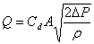 |
(20) |
哪里
Cd
= 流量系数，以及
A
= 孔口开口面积。
理论上，流量指数的值应该在0.5到1.0之间。大开口的特征是值非常接近 0.5，而小裂缝状开口的值接近 0.65。
用于描述气流分量的方程 (18-20) 的主要优点是可以简单地计算联立方程的牛顿法解的偏导数：
 and and
 |
(21) |
方程 (21) 中的符号与 F 。然而，方程（21）也存在一个问题：当压降（和流量）变为零时，导数变得无界。低流量时物理发生的情况提出了避免此问题的一个简单方法：流量的物理特性（以及方程的形式）发生变化。它从湍流变为层流。方程（18-20）可以替换为
|
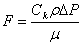 |
(22) |
哪里
Ck
= 层流系数，以及
m
= 粘度。
偏导数是简单常数：
 and and
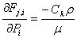 |
(23) |
下一节中的风道方程显示了这种层流关系的起源。这项技术已被几位研究人员独立发现和使用 [Axley 1987] 和 [Isaacs 1980]。尽管在低压降下使用方程（22）有物理原因，但其目的是确保方程在以下情况下收敛： DP 对于复杂网络中的许多流动路径之一，其趋近于零，而不是准确地表示太小而无法引起兴趣的气流。由于线性流量表达式不是用作真正的流量模型，而是用作数学技巧，因此无需调整其流量系数。考虑到估算空气流过开口（尤其是裂缝）时的温度存在不确定性，这一额外细节的有用性值得商榷。
幂律元素的 CONTAM 函数使用层流和湍流模型计算流量，并选择给出较小量级流量的方法。的导数存在不连续性 F(DP ) 两个方程相交的曲线。这种不连续性违反了牛顿法收敛的充分条件之一 [Conte and de Boor 1972, p. 11]。 86]。然而，作者使用小型气流网络对此时的气流进行的数值测试表明没有收敛问题。
考虑系数很有用 C 作为一个简单的常数， Ca ，在一组特定条件下评估（ m0, r0 and n0=m0/r0 ）乘以修正系数以考虑实际空气特性。方程（18-20）被转换为通用形式并以其适当的温度校正因子总结如下。

|

|
修正系数 | |

|

|

|
|

|

|
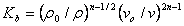 |
(24) |

|
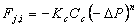 |

|
CONTAM 使用以下公式进行计算 r and n:
r = P / (287.055 T)
m = 3.7143´10-6 + 4.9286´10-8T
n = m / r
使用参考条件为标准大气压和20 ° C 给出 ro = 1.2041 千克/米 3 and no = 1.5083´10-5 m2/s.
以下过程概述了 ContamW 用于计算给定过渡雷诺数下的层流系数的方法。对于以下方程：
F 反式 = 空气质量流量 [kg/s]
A = 开口面积 [m 2]
D = 水力直径 = 4 A/周长（除非另有说明）[m]
空气粘度，1.81625 x 10 -5 [公斤/米·秒]
1. 计算过渡雷诺数下的流量。雷诺数为 30，除非用户输入另外指定。
F 反式 = 再模/数
2.计算压差 P 反式 在过渡流速下
a. 对于气流元件类型 Q = C(dP)^n
℃/0.6)
D=A
P 反式 = [F/(C 1/n
b. 对于气流元件类型 F = C(dP)^n
℃/0.6)
D=A
P 反式 = (F/C) 1/n
c. 适用于气流孔口、泄漏和裂纹元件类型
C = 2 A Cd
P 反式 = [F/(C 1/n
如果（ P 反式 < 10-10 ）然后 P 反式 = 10-10
3. 计算层流系数 P 反式
Ck = ( F）/ (P 反式 )
可以利用实验数据来确定幂律方程的孔板形式的系数：

|
(25) |
If n 已知或可以假设， Cb 等式 (24) 中的 可以根据等式 (25) 的倒数计算
|
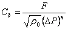 |
(26) |
当两点（ F1, DP1 ) 和 ( F2, DP2 ），已知， n 可以从下式计算：
|
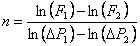 |
(27) |
与 Cb 然后根据方程(26)计算。
幂律模型可与组件泄漏面积公式一起使用，该公式已用于表征渗透计算的开口 [ASHRAE 2001，第 14 页]。 25.18]。泄漏面积基于一系列加压测试，其中在约 10 Pa 至 75 Pa 的一系列压差下测量气流速率。有效泄漏面积基于等式 (20) 的重新排列

|
(28) |
哪里
L
= 等效或有效泄漏面积 [m
2],
DPr
= 参考压差 [Pa],
Qr
= 预测的气流速率
DPr
（从曲线拟合到加压测试数据）[m
3
/s]，和
Cd
= 流量系数。
有两组常见的参考条件：
Cd = 1.0 and DPr = 4 帕
or
Cd = 0.6 and DPr = 10 帕。
泄漏面积可转换为流量系数：
|
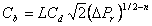 |
(29) |
该方程需要一个值 n 。如果未与测试结果一起报告，则 0.6 至 0.7 之间的值是合理的。
楼梯间通常被建模为一系列垂直房间，通过穿过地板的低阻力开口连接。楼梯间气流的 CONTAM 模型基于实验数据的拟合 [Achakji 和 Tamura 1988]。他们将每层楼的气流阻力表示为有效面积 Ae 在孔口方程（20）中，流量系数为 0.6。有效面积以轴的面积表示 AS ，楼层之间的距离 h ，楼梯上的人密度 d ，以及踏板是打开还是关闭。在疏散场景中，楼梯上的大量人员会影响流动阻力。实验使用的密度为 0、1 和 2 人/平方米 2 。对于开放式胎面，有效面积约为
|
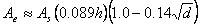 |
(30) |
以及封闭式胎面
|
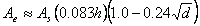 |
(31) |
幂律方程的系数为
|
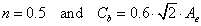 |
(32) |
[Clarke 1985，p. 11] 中提出了可以直接转换为幂律气流元件的裂缝流动关系。 204]作为：
|
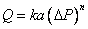 |
(33) |
哪里
|
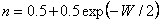 |
(34) |
and
|
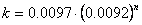 |
(35) |
与
W = 裂缝宽度（毫米），以及
a = 裂缝长度（米）。
因此，幂律方程 (19) 中的系数由下式给出 n 在方程（34）中和

|
(36) |